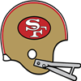

Season PredictionsThe sports journalists association has published the results of this year's division prediction polls among their twenty top sports journalists.
NFL East: Dallas Cowboys with 11 votes (Runner up: New York Giants with 5 votes)
NFL West: Green Bay Packers with 10 votes (Runner up: Minnesota Vikings with 6 votes)
AFL East: Buffalo Bills with 10 votes (Runner up: New York Jets with 8 votes)
AFL West: Oakland Raiders with 11 votes (Runner up: Denver Broncos with 9 votes)Trade Alert The Bears trade Dick Klein - T and a Bears 1966 3rd Round Pick to the Patriots for Walt Rock - T. The Bears trade Dick Klein - T and a Bears 1966 3rd Round Pick to the Patriots for Walt Rock - T.
Trade Alert The Patriots trade Don Allard - QB and a Patriots 1966 4th Round Pick to the Cowboys for Bill Nelsen - QB. The Patriots trade Don Allard - QB and a Patriots 1966 4th Round Pick to the Cowboys for Bill Nelsen - QB.
Trade Alert The Lions trade John Gordy - G and a Lions 1966 3rd Round Pick to the Browns for Kevin Handy - G. The Lions trade John Gordy - G and a Lions 1966 3rd Round Pick to the Browns for Kevin Handy - G.
Trade Alert The Eagles trade Herschel Turner - T and a Eagles 1966 7th Round Pick to the Browns for Harold Olson - T. The Eagles trade Herschel Turner - T and a Eagles 1966 7th Round Pick to the Browns for Harold Olson - T.
Game of the Week: Denver Broncos at Buffalo BillsOur Expert Predictions:
Jeremy Piper : Buffalo Bills
I do not think people realize how good this defense is.
Mary Moore : Denver Broncos
Looking at how the teams match up, I think that Goose Gonsoulin - CB will shine for the Broncos defense. They rely on him, and he will deliver.
Jim Nox : Buffalo Bills
Definitely the losing streak is on their minds. They will get the win and break it in this game. Can't lose.
Darren Francis : Buffalo Bills
I have a lot of respect for head coach Jeremy Otero. He is doing great things in Buffalo. He is running a great offense. They win big.
A hidden gem? Kurek, R. - RB has turned some heads at the training facility of the Minnesota Vikings. The undrafted rookie free agent has put together an astonishing training camp. Reports out of the camp suggest the coaches and fans are excited to see if he can continue his development. Kurek, R. - RB has turned some heads at the training facility of the Minnesota Vikings. The undrafted rookie free agent has put together an astonishing training camp. Reports out of the camp suggest the coaches and fans are excited to see if he can continue his development.
Training Camp highlightsIt looks like San Francisco 49ers hit the jackpot when they drafted Curtis, M. - LB this year. Curtis has delivered astonishing progress in trainingcamp. The sky is the ceiling for this kid!A hidden gem? Kanicki, J. - DT has turned some heads at the training facility of the Washington Redskins. The undrafted rookie free agent has put together an astonishing training camp. Reports out of the camp suggest the coaches and fans are excited to see if he can continue his development. Kanicki, J. - DT has turned some heads at the training facility of the Washington Redskins. The undrafted rookie free agent has put together an astonishing training camp. Reports out of the camp suggest the coaches and fans are excited to see if he can continue his development.
A hidden gem?Cameron, Z. - RB has turned some heads at the training facility of the Cleveland Browns. The undrafted rookie free agent has put together an astonishing training camp. Reports out of the camp suggest the coaches and fans are excited to see if he can continue his development.TE Bill Dawson (N/A) has retired!TE Bill Dawson (53 ovr) has retired after failing to get signed in free agency.TE Edward Lim (N/A) has retired!TE Edward Lim (47 ovr) has retired after failing to get signed in free agency.Post Free Agency RetirementsThe following players have retired after going unsigned through free agency:
WR William Herron
WR Wilbur Chester
WR Jose Goode
WR Darin Barney
WR Earl Sapp
WR Brandon White
WR Ferdinand Navarrete
WR John Dye
WR Martin Thompson
WR Brian Bentley
LB Jay Valenzuela
LB Paul Gruber
LB Riley Morris
LB Robert Soleau
LB Nelson Toburen
LB Emil Karas
LB Bob HortonFree Agency Round 10: Round Up43 players signed this week.
The biggest name signing this week was Mike Sandusky. The G out of Maryland signed a $330,000 contract for 2 year(s) with Boston Patriots.
NFL East was the most active division with a total of 25 signings.
Cleveland Browns was the most active signing a total of 5 player(s).
The biggest spender was Cleveland Browns who signed 5 player(s) for a total of $562,500.Free Agency Round 9: Round Up37 players signed this week.
The biggest name signing this week was Bob Paremore. The RB out of Florida A&M signed a $310,000 contract for 5 year(s) with Washington Redskins.
NFL East was the most active division with a total of 23 signings.
Pittsburgh Steelers was the most active signing a total of 4 player(s).
The biggest spender was New York Jets who signed 3 player(s) for a total of $457,500.Free Agency Round 8: Round Up31 players signed this week.
The biggest name signing this week was Charley Long. The G out of Tennessee-Chattanooga signed a $290,000 contract for 2 year(s) with Kansas City Chiefs.
NFL East was the most active division with a total of 19 signings.
New York Giants was the most active signing a total of 4 player(s).
The biggest spender was Kansas City Chiefs who signed 2 player(s) for a total of $400,000.Free Agency Round 7: Round Up29 players signed this week.
The biggest name signing this week was Tom Neumann. The RB out of Northern Michigan signed a $430,000 contract for 2 year(s) with Houston Oilers.
NFL West was the most active division with a total of 17 signings.
Detroit Lions was the most active signing a total of 5 player(s).
The biggest spender was Detroit Lions who signed 5 player(s) for a total of $1,005,000.Free Agency Round 6: Round Up28 players signed this week.
The biggest name signing this week was Don Norton. The WR out of Iowa signed a $600,000 contract for 3 year(s) with Buffalo Bills.
NFL East was the most active division with a total of 16 signings.
Chicago Bears was the most active signing a total of 4 player(s).
The biggest spender was Chicago Bears who signed 4 player(s) for a total of $1,170,500.WR Fred Biletnikoff (Det) goes #1 overall!NEW YORK -- The Detroit Lions drafted Fred Biletnikoff #1 overall in the 1965 draft. The 6' 1" WR fits the team's needs perfectly. Said Lions general manager: "It's up to us to develop him and get good players around him."
"The great thing about the game of football is, it's a team game," Biletnikoff said on a conference call. "I'm just going to be one piece of the puzzle."Moore and Nox Mock DraftPick 1: Detroit Lions
Larry Moore: Dick Butkus - LB
This is a kid who really contributes to the team spirit and the social cohesiveness on the team. As consistent a tackler as you will find. Has great technique, takes the man down while stabbing for the ball. Amazing strength for the position. Makes him versatile, and tells of his high ceiling. A sack master in college, and with this kind of quickness it is easy to see him continue that at the pro level. Fill a need, get a quality player, everyone wins! He will fit right in with the pros.
Jim Nox: Dick Butkus - LB
The guy has gets along with everyone. Just watch the way he tackles. No nonsense there. Hard hitting. Wraps up. And if possible, go for the ball. Will do so much for this defense. Really strong for a Linebacker. This is something that teams love. You better have some athletic offensive linemen if you hope to block this kid. Lightning fast first step and amazing closing speed. he will be a terror for Quarterbacks for years to come. Once this kid gets in the building, they will be set at this position for years.
Pick 2: Houston Oilers
Larry Moore: Jim Castle - DT
His good natured behavior, even toward opponents have earned him some criticism, but also an awful lot of respect. This youngster simply cannot be moved. He is so strong. Good luck trying to block him on running plays. He is going to get sacks, no two ways about it. Just his speed alone almost guarantees that. He will get a great chance to earn the starting job. He fits what they are looking for. He is a solid player. Cannot go wrong here.
Jim Nox: Jim Castle - DT
Respected for his good behavior on the field. His greatest asset is his strength. If you see him benchpress, you will understand what all the rave is about. He is going to get sacks, no two ways about it. Just his speed alone almost guarantees that. Rock solid player is just what they need. A great fit here, both in terms of need and quality.
Pick 3: San Diego Chargers
Larry Moore: Chris Hanburger - LB
This guy understands what it means to be a pro. He is driven by the love of the sport. Here you have a guy, who really benefits the atmosphere in the building. Everyone wants to be around him. Tackles so well. Will foce fumbles. Consistently takes bigger ballcarriers to the ground. Fans will love the tenacity. Strong enough to flatten smaller blockers. And strong enough to not be flattened by the bigger ones. Elite speed for a Defensive End. This guy will be a terror coming off the edge. He fills a hole at the position. Blue-chip player. Will fit right in and start right away. Love it.
Jim Nox: Chris Hanburger - LB
Here is a kid who no one doubts will put in the work. Respected for his good behavior on the field. Here you have a guy, who really benefits the atmosphere in the building. Everyone wants to be around him. A great tackler. Consistent. Hard hitting. A force to be reckoned with. Has sufficient strength to play with the big boys in the pros. You better have some athletic offensive linemen if you hope to block this kid. Lightning fast first step and amazing closing speed. he will be a terror for Quarterbacks for years to come. They need players at the position, and good ones at that. He fits the bill, he is worth the pick. End of story.
Pick 4: Philadelphia Eagles
Larry Moore: Fred Biletnikoff - WR
Here you have a kid who puts in the work to succeed. Here you have a guy, who really benefits the atmosphere in the building. Everyone wants to be around him. Rarely drops the ball. Fans might not be on board with what can be framed as a need pick. But trust me once they see this kid play, they will be more than happy.
Jim Nox: Mike Curtis - LB
Coaches like his strength. I do too. It will benefit him greatly on the field. Deceptively fast, will make you dizzy with his speed rush. If you watch the tape again, you can see he plays with nice instincts. Fans might not be on board with what can be framed as a need pick. But trust me once they see this kid play, they will be more than happy.
Pick 5: San Francisco 49ers
Larry Moore: Ralph Neely - T
He takes care of his teammates. Most everyone who ever played with him, counts him as their friend. With the amount this youngster can already benchpres, he will only ever have to focus on improving technique. Has nice technique when blocking on run plays. Keeps his leverage and finishes his blocks. Displays nice technique when blocking on pass plays. Keeps his balance and buys time for the quarterback. When the available talent fits what you need, there is reason to celebrate. They are getting a great talent who will serve them for many years.
Jim Nox: Ralph Neely - T
Well liked in the locker room. Incredibly strength and physique. He comes of the line with power and leverage on run plays. This is something that scouts notice. Good pass blockers are hard to find right out of college, and this guy is pretty good. Fans, coaches, and teammates alike will be ecstatic to get him on the team. He fits what they need, he is such a great talent. Everything lines up.
Pick 6: Boston Patriots
Larry Moore: Bob Hayes - WR
Here you have a kid who puts in the work to succeed. Sportsmanship, love of the sport and respect, is what you get with him. Here you have a guy, who really benefits the atmosphere in the building. Everyone wants to be around him. It is rare to see a kid come out of college with this ability to catch the ball. Coaches like his instincts. The stars align for them to get him here. Just what they need. Blue-chip player with great upside. Hard to botch this pick.
Jim Nox: Fred Biletnikoff - WR
Knows what it takes to achieve success at any level. The guy has gets along with everyone. His college tape shows him catching the ball well. He can do what they want. He will deliver results early. He fits a need. End of story.
Pick 7: Cleveland Browns
Larry Moore: Mike Curtis - LB
Has developed nice strength for being this early in his career. He closes so fast. Offensive tackles will learn that the hard way. Fast learner. Fans might not be on board with what can be framed as a need pick. But trust me once they see this kid play, they will be more than happy.
Jim Nox: Jackson Day - LB
Known for showing up early and staying late. Can bull rush smaller Tight Ends and Fullbacks when blitzing. Coaches love this kind on their Linebackers. Coaches like his instincts. He can do what they want. He will deliver results early. He fits a need. End of story.
Pick 8: Pittsburgh Steelers
Larry Moore: Norm Evans - T
Not afraid to lead. He helps everyone get in the right position, making the team run as a well oiled machine. This is a young man who will bench press a Defensive Tackle, and not a small one! Pretty clever. It is not often that the talent available fits perfectly with what you need. When it does, it makes for a win-win situation. This young man is going to be put in a position to succeed.
Jim Nox: Harry Schuh - T
Has nice technique when blocking on run plays. Keeps his leverage and finishes his blocks. Reliably makes the right decision on the field. They need playmakers at this position. This is what they are getting here. Solid pick.
Pick 9: St. Louis Cardinals
Larry Moore: Jackson Day - LB
Due to his work ethic, this kid is very coachable. His physical foundation given him an nice ceiling. Well schooled in the game, and it shows on the field. It is all about fit here. Is there a guy at a position of need, worthy of a pick this high? The answer, obviously, is 'heck yeah'.
Jim Nox: Marvin Myrick - LB
This kid puts in the work. This is a kid who really contributes to the team spirit and the social cohesiveness on the team. On tape you clearly see that he is a good tackler. Teams are looking for players who will not break contain. This young man is strong enough to stay on his feet against grown men on the offensive line. You need him, just get him already.
Pick 10: Chicago Bears
Larry Moore: Marvin Myrick - LB
Due to his work ethic, this kid is very coachable. Known among his teammates as a bit of a goofball, but never in a bad way. The kind that keeps spirits high even when a season goes south. He is a well developed tackler, this is something teams look for. It saves a lot of time when the fundamentals are good. Has developed nice strength for being this early in his career. He fills a hole at the position. Blue-chip player. Will fit right in and start right away. Love it.
Jim Nox: Bob Hayes - WR
His college coaches talk highly of his work ethic. He is fundamentally a good kid. You rarely see him commit stupid penalties. Liked by coaches and teammates. If you check his tape you will see him make some truly incredible catches. Reacts quickly and puts himself in a position to make a play. Nothing to think about here. Pick up the kid, bring him into the building, put him om the field.
Free Agency Round 3: Round Up2 players signed this week.
The biggest name signing this week was Andy Robustelli. The DE out of Arnold signed a $890,000 contract for 1 year(s) with Boston Patriots.
NFL East was the most active division with a total of 1 signings.
Minnesota Vikings was the most active signing a total of 1 player(s).
The biggest spender was Boston Patriots who signed 1 player(s) for a total of $890,000.CB Dick Night Train Lane (Min) signs large free agent deal!NEW YORK -- Dick Night Train Lane, one of the league's top CBs and top free-agent prize agreed to a 1 year contract worth $880,000 to play for the Minnesota Vikings.DE Andy Robustelli (Bos) signs large free agent deal!NEW YORK -- Andy Robustelli, one of the league's top DEs and top free-agent prize agreed to a 1 year contract worth $890,000 to play for the Boston Patriots.Free Agency Round 2: Round Up4 players signed this week.
The biggest name signing this week was Ernie Stautner. The DT out of Boston College signed a $1,000,000 contract for 1 year(s) with Washington Redskins.
NFL East was the most active division with a total of 2 signings.
Washington Redskins was the most active signing a total of 1 player(s).
The biggest spender was Washington Redskins who signed 1 player(s) for a total of $1,000,000.QB Norm Snead (Oak) signs large free agent deal! NEW YORK -- Norm Snead, one of the league's top QBs and top free-agent prize agreed to a 1 year contract worth $840,000 to play for the Oakland Raiders. NEW YORK -- Norm Snead, one of the league's top QBs and top free-agent prize agreed to a 1 year contract worth $840,000 to play for the Oakland Raiders.
CB Richie Petitbon (Bos) signs large free agent deal!NEW YORK -- Richie Petitbon, one of the league's top CBs and top free-agent prize agreed to a 1 year contract worth $1,000,000 to play for the Boston Patriots.DT Ernie Stautner (Was) signs large free agent deal!NEW YORK -- Anxious all week, DT Ernie Stautner was finally catching some sleep at home in Charlotte, N.C., when he found out just how serious the Washington Redskins were about acquiring him.
The free-agent signing period had just begun, and Stautner's agent called to tell him that the Redskins head coach was in town. Soon, Stautner was meeting him at an executive airport.
Now, Stautner is being fitted for a Redskins uniform.
One of the league's top DTs and top free-agent prize agreed Friday to a 1 year contract worth $1,000,000.
"It's one thing to play football in this league and make a living, but it's a totally different thing to come to a place with a rich tradition like the Redskins," Stautner said.Free Agency Round 1: Round Up4 players signed this week.
The biggest name signing this week was Phil King. The RB out of Vanderbilt signed a $710,000 contract for 1 year(s) with Boston Patriots.
NFL East was the most active division with a total of 3 signings.
Pittsburgh Steelers was the most active signing a total of 2 player(s).
The biggest spender was Pittsburgh Steelers who signed 2 player(s) for a total of $1,400,000.Offseason Team Needs with Jeremy PiperWith a new offseason under way, some rosters are in good shape. However, other teams have big needs to address this offseason. Your always trusty Jeremy Piper here brings you a quick glance at the teams with work to do. Whether they fill their needs in the draft or with veterans in free agency remains to be seen.
Here we go:
Philadelphia Eagles: QB WR CB LB DT
Cleveland Browns: LB DE
New York Giants: QB T TE WR CB LB DT DE
St. Louis Cardinals: LB DT DE
Pittsburgh Steelers: QB G T TE LB DT DE
Washington Redskins: QB T WR DT
Dallas Cowboys: C WR LB DE
Green Bay Packers: QB T C WR CB LB DT DE
Detroit Lions: G T CB LB DE
San Francisco 49ers: G T C WR CB LB SS
Baltimore Colts: QB T WR LB DE SS
Chicago Bears: QB G C WR CB LB DE
Los Angeles Rams: LB SS
Minnesota Vikings: DT DE
Houston Oilers: QB RB C CB DT FS
New York Jets: T C TE WR CB LB DT DE SS
Buffalo Bills: TE WR LB FS
Boston Patriots: WR CB
San Diego Chargers: G C LB
Kansas City Chiefs: QB CB LB DT
Oakland Raiders: QB
Denver Broncos: WR DE
San Diego Chargers announce new staff. Thomas South will be serving as the new General Manager for the Chargers . He will get a 1 year contract worth 5 million pr year with the Chargers. Thomas South will be serving as the new General Manager for the Chargers . He will get a 1 year contract worth 5 million pr year with the Chargers.
Kansas City Chiefs announce new staff. Charles Gist will be serving as the new General Manager for the Chiefs . He will get a 3 year contract worth 5.5 million pr year with the Chiefs. Charles Gist will be serving as the new General Manager for the Chiefs . He will get a 3 year contract worth 5.5 million pr year with the Chiefs.
Oakland Raiders announce new staff.Raiders revealed that they have signed Francisco James as their new Offensive Coordinator. He will get a 3 year contract worth 0.5 million pr year with the Raiders.Minnesota Vikings announce new staff.Kevin Brewer will be serving as the new General Manager for the Vikings . He will get a 1 year contract worth 2.4 million pr year with the Vikings.Houston Oilers announce new staff. Oilers revealed that they have signed Morris Matos as their new Offensive Coordinator. He will get a 5 year contract worth 2 million pr year with the Oilers. Oilers revealed that they have signed Morris Matos as their new Offensive Coordinator. He will get a 5 year contract worth 2 million pr year with the Oilers.
New York Jets announce new staff.Michael Herring will be serving as the new General Manager for the Jets . He will get a 1 year contract worth 4.7 million pr year with the Jets.Buffalo Bills announce new staff. David Johns will be serving as the new General Manager for the Bills . He will get a 3 year contract worth 4.1 million pr year with the Bills. David Johns will be serving as the new General Manager for the Bills . He will get a 3 year contract worth 4.1 million pr year with the Bills.
Boston Patriots announce new staff.Patriots have signed Timothy Popp as their new Defensive Coordinator. Popp will get a 3 year contract worth 1.5 million pr year with the Patriots.Detroit Lions announce new staff.Lions have signed Jerome Stevens as their new Defensive Coordinator. Stevens will get a 3 year contract worth 0.5 million pr year with the Lions.
It was also revealed that Kerry Wilson will be serving as the new General Manager for the Lions . He will get a 3 year contract worth 3.6 million pr year with the Lions.New York Giants announce new staff. Andrew Trammell will be serving as the new General Manager for the Giants . He will get a 1 year contract worth 3.9 million pr year with the Giants. Andrew Trammell will be serving as the new General Manager for the Giants . He will get a 1 year contract worth 3.9 million pr year with the Giants.
Dallas Cowboys announce new staff.Edward Prather will be serving as the new General Manager for the Cowboys . He will get a 2 year contract worth 4 million pr year with the Cowboys.San Francisco 49ers hire Arthur Lilly away from the Oakland RaidersThe 49ers have announced that they have signed Arthur Lilly as their new Head Coach. Lilly was previously working for Raiders as Offensive Coordinator. He will get a 4 year contract worth 6 million pr year with the 49ers.Nicholas Kinsey staying with Green Bay Packers The San Francisco 49ers tried to pry Nicholas Kinsey away from Packers to fill the position as their new Head Coach. However, Kinsey publicly dismissed that a move was imminent, and that assured fans that he would stay with Packers as their Defensive Coordinator for the coming season. The San Francisco 49ers tried to pry Nicholas Kinsey away from Packers to fill the position as their new Head Coach. However, Kinsey publicly dismissed that a move was imminent, and that assured fans that he would stay with Packers as their Defensive Coordinator for the coming season.
Draft Order: Detroit Lions own first overall.Pick 1: Detroit Lions
Pick 2: Houston Oilers
Pick 3: San Diego Chargers
Pick 4: Philadelphia Eagles
Pick 5: San Francisco 49ers
Pick 6: Boston Patriots
Pick 7: Cleveland Browns
Pick 8: Pittsburgh Steelers
Pick 9: St. Louis Cardinals
Pick 10: Chicago Bears
Pick 11: New York Giants
Pick 12: New York Jets
Pick 13: Kansas City Chiefs
Pick 14: Washington Redskins
Pick 15: Baltimore Colts
Pick 16: Los Angeles Rams
Pick 17: Oakland Raiders
Pick 18: Minnesota Vikings
Pick 19: Buffalo Bills
Pick 20: Dallas Cowboys
Pick 21: Denver Broncos
Pick 22: Green Bay Packers
Coaching Carousel Predictions.The offseason is upon us and that means teams are shaking up their coaching staffs. This means that we get to take our annual look at coordinators who could make the leap to become head coaches, and the teams who are likely to poach them.
The prime candidates identified by our experts are:
Nicholas Kinsey - Defensive Coordinator - Green Bay Packers
Larry Good - Defensive Coordinator - San Francisco 49ers
Alvin Blythe - Defensive Coordinator - St. Louis Cardinals
Ronald Forte - Defensive Coordinator - San Diego Chargers
Bill Hubbard - Offensive Coordinator - Cleveland Browns
Robert Wilder - Offensive Coordinator - San Francisco 49ers
Willie Luong - Offensive Coordinator - San Diego Chargers
Alexander Gibson - Defensive Coordinator - Oakland Raiders
As always, we are prone to wild speculations, so we asked our in-house experts to do a little matchmaking between candidates and teams. Here is what they came up with:
Mary Moore:
I see Larry Good being promoted to head coach of the San Francisco 49ers.
Darren Francis:
I think the Browns lose Bill Hubbard and I see him heading to San Francisco 49ers.
Jim Nox:
The Chargers cannot hold on to Ronald Forte. I would like to see him coach the San Francisco 49ers.
Jeremy Piper:
Alexander Gibson is certainly on the move. That means Raiders will need a new coordinator. As for where Gibson ends up? Well, I think San Francisco 49ers is a good bet.Contract UpdatesThe following players have unlocked bonuses in their contracts based on their performance last season:
Dick Felt - FS (New York Giants) unlocked a 5% bonus for Games Started (Target: 8 / Accomplished: 13).
Fate Echols - T (St. Louis Cardinals) unlocked a 10% bonus for Games Started (Target: 8 / Accomplished: 14).
Sonny Randle - WR (St. Louis Cardinals) unlocked a 5% bonus for Games Started (Target: 8 / Accomplished: 11).
Rudy Hayes - LB (Pittsburgh Steelers) unlocked a 5% bonus for Tackles (Target: 40 / Accomplished: 60).
Bob Khayat - G (Washington Redskins) unlocked a 5% bonus for Games Started (Target: 8 / Accomplished: 12).
Bill Swain - LB (Washington Redskins) unlocked a 5% bonus for Tackles (Target: 40 / Accomplished: 65).
Dave Hill - T (Washington Redskins) unlocked a 5% bonus for Games Started (Target: 8 / Accomplished: 11).
Jim Steffen - SS (Washington Redskins) unlocked a 10% bonus for Games Started (Target: 8 / Accomplished: 14).
Willie Wood - SS (Green Bay Packers) unlocked a 5% bonus for Games Started (Target: 8 / Accomplished: 13).
Gail Cogdill - WR (Detroit Lions) unlocked a 5% bonus for Catches (Target: 40 / Accomplished: 66).
Billy Kilmer - QB (San Francisco 49ers) unlocked a 5% bonus for Games Started (Target: 8 / Accomplished: 9).
Ron Miller - QB (Los Angeles Rams) unlocked a 10% bonus for Completion % (Target: 50 / Accomplished: 52.6).
Sherrill Headrick - LB (Minnesota Vikings) unlocked a 5% bonus for Sacks (Target: 5 / Accomplished: 8).
Jerry Mays - DE (New York Jets) unlocked a 10% bonus for Sacks (Target: 5 / Accomplished: 14).
Jim Schrader - C (New York Jets) unlocked a 5% bonus for Pancakes (Target: 20 / Accomplished: 26).
Al Bemiller - C (Buffalo Bills) unlocked a 10% bonus for Games Started (Target: 8 / Accomplished: 14).
Don Healy - DT (Buffalo Bills) unlocked a 5% bonus for Games Started (Target: 8 / Accomplished: 11).
Jim Tyrer - T (Kansas City Chiefs) unlocked a 5% bonus for Games Started (Target: 8 / Accomplished: 14).
Smokey Stover - LB (Kansas City Chiefs) unlocked a 5% bonus for Games Started (Target: 8 / Accomplished: 10).
Ed Budde - G (Oakland Raiders) unlocked a 10% bonus for Pancakes (Target: 20 / Accomplished: 48).
Dave Kocourek - TE (Denver Broncos) unlocked a 5% bonus for Games Started (Target: 8 / Accomplished: 14).
Chuck Bryant - WR (Denver Broncos) unlocked a 10% bonus for Receiving TDs (Target: 5 / Accomplished: 8).
Other retirements
QB Tom Yewcic (60 ovr) : Career stats: 24/39, 279 yds, 1 TD
QB Don Heinrich (60 ovr) : Career stats: 23/37, 173 yds, 0 TD
QB Ed Chlebek (60 ovr) : Career stats: 0/0, 0 yds, 0 TD
QB Zeke Bratkowski (59 ovr) : Career stats: 13/26, 86 yds, 1 TD
QB Glynn Griffing (59 ovr) : Career stats: 0/0, 0 yds, 0 TD
QB Michael McClure (55 ovr) : Career stats: 0/0, 0 yds, 0 TD
QB Michael Pridgen (51 ovr) : Career stats: 0/0, 0 yds, 0 TD
QB Markus Rader (49 ovr) : Career stats: 0/0, 0 yds, 0 TD
QB Andrew Anders (40 ovr) : Career stats: 0/0, 0 yds, 0 TD
QB Ronald Gorham (38 ovr) : Career stats: 0/0, 0 yds, 0 TD
QB David Carrera (33 ovr) : Career stats: 0/0, 0 yds, 0 TD
RB Tom Michel (66 ovr) : Career stats: 0 att, 0 yds, 0 TD
RB Ode Burrell (65 ovr) : Career stats: 0 att, 0 yds, 0 TD
RB Ernie Wheelwright (64 ovr) : Career stats: 0 att, 0 yds, 0 TD
RB Larry Ferguson (56 ovr) : Career stats: 0 att, 0 yds, 0 TD
RB Lanny Thorne (47 ovr) : Career stats: 0 att, 0 yds, 0 TD
RB Ronald Weber (46 ovr) : Career stats: 0 att, 0 yds, 0 TD
FB Mike Lind (66 ovr) : Career stats: 0 att, 0 yds, 0 TD
FB Bill Thornton (64 ovr) : Career stats: 0 att, 0 yds, 0 TD
FB Jim Cunningham (62 ovr) : Career stats: 0 att, 0 yds, 0 TD
FB Darrell Lester (59 ovr) : Career stats: 0 att, 0 yds, 0 TD
FB Willie Jones (57 ovr) : Career stats: 0 att, 0 yds, 0 TD
FB Nate Craddock (52 ovr) : Career stats: 0 att, 0 yds, 0 TD
FB Bobby Fowler (47 ovr) : Career stats: 0 att, 0 yds, 0 TD
FB Harry Crump (46 ovr) : Career stats: 0 att, 0 yds, 0 TD
G Harley Sewell (87 ovr) : Career stats: 86 Pancakes
G Ernie Park (56 ovr) : Career stats: 0 Pancakes
G Bill Byrne (55 ovr) : Career stats: 0 Pancakes
G Lance Poimbeouf (54 ovr) : Career stats: 0 Pancakes
G Bob Mischak (52 ovr) : Career stats: 34 Pancakes
G Bill Kirchiro (50 ovr) : Career stats: 0 Pancakes
G Billy Eastman (41 ovr) : Career stats: 0 Pancakes
G Michael Williams (38 ovr) : Career stats: 0 Pancakes
G Melvin Starnes (24 ovr) : Career stats: 0 Pancakes
T Bill Frank (58 ovr) : Career stats: 0 Pancakes
T Dick Hudson (58 ovr) : Career stats: 0 Pancakes
T Ken Panfil (53 ovr) : Career stats: 0 Pancakes
T Kirk Trevino (51 ovr) : Career stats: 0 Pancakes
T Agustin Crawford (50 ovr) : Career stats: 0 Pancakes
T Bob Kelly (49 ovr) : Career stats: 0 Pancakes
T Charles Lilley (49 ovr) : Career stats: 0 Pancakes
T William West (43 ovr) : Career stats: 0 Pancakes
T Wayne Briones (40 ovr) : Career stats: 0 Pancakes
C Joe Wendryhoski (62 ovr) : Career stats: 0 Pancakes
C Paul Howland (42 ovr) : Career stats: 0 Pancakes
TE Stephen Summers (43 ovr) : Career stats: 0 rec, 0 yds, 0 TD
TE James Bernard (38 ovr) : Career stats: 13 rec, 112 yds, 0 TD
WR Jim Evans (65 ovr) : Career stats: 0 rec, 0 yds, 0 TD
WR Jan Barrett (54 ovr) : Career stats: 0 rec, 0 yds, 0 TD
WR Larry Parent (46 ovr) : Career stats: 2 rec, 16 yds, 0 TD
WR Ira Riggins (31 ovr) : Career stats: 0 rec, 0 yds, 0 TD
CB Norm Bass (55 ovr) : Career stats:
CB Douglas Zink (53 ovr) : Career stats:
CB Michael Contreras (49 ovr) : Career stats:
CB Billie Lacroix (39 ovr) : Career stats:
CB Toby Mckinney (34 ovr) : Career stats:
CB Ronald Demarco (33 ovr) : Career stats:
CB William Gunter (28 ovr) : Career stats:
LB Herb Travenio (63 ovr) : Career stats:
LB Carl Brettschneider (62 ovr) : Career stats: 22 Tck, 2 Sck, 1 FF, 1 FR
LB Marion Rushing (60 ovr) : Career stats:
LB Mike Woulfe (58 ovr) : Career stats:
LB Fred Whittingham (56 ovr) : Career stats:
LB Ed Bettridge (55 ovr) : Career stats:
LB Jim Price (55 ovr) : Career stats:
LB Herb Paterra (54 ovr) : Career stats:
LB Albert Gursky (52 ovr) : Career stats:
LB Scott Triplett (44 ovr) : Career stats:
LB Xavier Johnston (44 ovr) : Career stats:
LB Timothy Harris (41 ovr) : Career stats:
LB Roy Weaver (41 ovr) : Career stats:
LB Gary Costello (40 ovr) : Career stats:
LB Kevin Shelby (40 ovr) : Career stats:
LB James Hawk (32 ovr) : Career stats:
LB John Tyler (31 ovr) : Career stats:
DT Tom Saidock (61 ovr) : Career stats: 31 Tck, 2 Sck, 1 FF
DT Sid Youngelman (61 ovr) : Career stats: 15 Tck, 1 Sck
DT Fred Moore (54 ovr) : Career stats:
DT John Contoulis (51 ovr) : Career stats:
DT Sam Silas (50 ovr) : Career stats:
DT Chuck Sieminski (45 ovr) : Career stats:
DT Elliott Stewart (42 ovr) : Career stats:
DT Dwight Chism (41 ovr) : Career stats:
DT James Beaudoin (36 ovr) : Career stats:
DT Max Shin (36 ovr) : Career stats:
DT Connie Lewis (35 ovr) : Career stats:
DT Rudy Lynch (31 ovr) : Career stats:
DT Ronnie Mitchell (30 ovr) : Career stats:
DT Erik Graham (29 ovr) : Career stats:
DE Maury Schleicher (57 ovr) : Career stats:
DE Reynaldo Rutledge (53 ovr) : Career stats:
DE Dick Davis (52 ovr) : Career stats:
DE Larry Jordan (51 ovr) : Career stats:
DE Bob Taylor (49 ovr) : Career stats:
DE Lawrence Ginn (42 ovr) : Career stats:
DE Reginald Bowden (41 ovr) : Career stats:
DE John Adams (39 ovr) : Career stats:
DE Willie Combs (30 ovr) : Career stats:
FS Jimmy Warren (66 ovr) : Career stats:
FS Bobby Thompson (64 ovr) : Career stats:
FS Carl Taseff (61 ovr) : Career stats: 85 Tck, 2 Int, 1 FF
FS Monk Bailey (60 ovr) : Career stats:
FS Dave Raimey (58 ovr) : Career stats:
FS Salvador Barr (44 ovr) : Career stats:
FS Raymond Keller (40 ovr) : Career stats:
FS James Figueroa (35 ovr) : Career stats:
FS Joseph Pelletier (34 ovr) : Career stats:
FS Alton Tejeda (31 ovr) : Career stats:
SS Doug Hart (73 ovr) : Career stats:
SS Nat Whitmyer (61 ovr) : Career stats:
SS John Sklopan (55 ovr) : Career stats:
SS Jim Wright (54 ovr) : Career stats:
SS Dave Cloutier (53 ovr) : Career stats:
SS Howard Vaughan (52 ovr) : Career stats:
SS Daniel Perry (40 ovr) : Career stats:
SS Daniel Maynard (40 ovr) : Career stats:
SS Francisco Blocker (35 ovr) : Career stats:
P Bobby Walden (53 ovr) : Career stats: 0 yards, 0 inside 20
FS Lee Riley (N/A) has retired!The N/A' FS Lee Riley has retired after 10 seasons. His presence in the locker room and on the field will be sorely missed.
He finished his career with 62 Tck, 5 IntRB Lew Carpenter (N/A) has retired!The N/A' RB Lew Carpenter has retired after 12 seasons. His presence in the locker room and on the field will be sorely missed.
He finished his career with 48 att, 279 yds, 7 TD, 24 rec, 195 yds, 2 TDLB Vince Costello (N/A) has retired!The N/A' LB Vince Costello has retired after 8 seasons. His presence in the locker room and on the field will be sorely missed.
He finished his career with 83 Tck, 3 Sck, 4 FF, 2 FRCB Jerry Norton (N/A) has retired!The N/A' CB Jerry Norton has retired after 11 seasons. His presence in the locker room and on the field will be sorely missed.
He finished his career with 59 Tck, 1 Sck, 6 Int, 1 Def TD, 2 FFSS Charlie Sumner (N/A) has retired!The N/A' SS Charlie Sumner has retired after 10 seasons. His presence in the locker room and on the field will be sorely missed.
He finished his career with 66 Tck, 2 Sck, 1 Int, 1 Def TD, 2 FF, 3 FRK William Rogers (N/A) has retired!The N/A' K William Rogers has retired after 3 seasons. His presence in the locker room and on the field will be sorely missed.
He finished his career with 9/19 FGCB Bobby Freeman (N/A) has retired!The N/A' CB Bobby Freeman has retired after 8 seasons. His presence in the locker room and on the field will be sorely missed.
He finished his career with 98 Tck, 1 Sck, 6 Int, 2 Def TD, 3 FF, 1 FRFB John Henry Johnson (N/A) has retired!The N/A' FB John Henry Johnson has retired after 11 seasons. His presence in the locker room and on the field will be sorely missed.
He finished his career with 14 att, 145 yds, 1 TDK Sam Baker (N/A) has retired!The N/A' K Sam Baker has retired after 12 seasons. His presence in the locker room and on the field will be sorely missed.
He finished his career with 42/50 FGWR Bobby Walston (N/A) has retired!The N/A' WR Bobby Walston has retired after 14 seasons. His presence in the locker room and on the field will be sorely missed.
He finished his career with 45 rec, 744 yds, 5 TDDT Bob Gain (N/A) has retired!The N/A' DT Bob Gain has retired after 13 seasons. His presence in the locker room and on the field will be sorely missed.
He finished his career with 67 Tck, 5 Sck, 1 FF, 1 FRC Ray Wietecha (N/A) has retired!The N/A' C Ray Wietecha has retired after 12 seasons. His presence in the locker room and on the field will be sorely missed.
He finished his career with 122 PancakesQB Y.A. Tittle (N/A) has retired!The N/A' QB Y.A. Tittle has retired after 17 seasons. His presence in the locker room and on the field will be sorely missed.
He finished his career with 863/1296, 8951 yds, 67 TDWR Max McGee (N/A) has retired!The N/A' WR Max McGee has retired after 11 seasons. His presence in the locker room and on the field will be sorely missed.
He finished his career with 236 rec, 2332 yds, 13 TDDT Gene Lipscomb (N/A) has retired!The N/A' DT Gene Lipscomb has retired after 12 seasons. His presence in the locker room and on the field will be sorely missed.
He finished his career with 72 Tck, 17 Sck, 2 FF, 2 FRWR Dick Bielski (N/A) has retired!The N/A' WR Dick Bielski has retired after 10 seasons. His presence in the locker room and on the field will be sorely missed.
He finished his career with 72 rec, 998 yds, 7 TDDE Gino Marchetti (N/A) has retired!The N/A' DE Gino Marchetti has retired after 13 seasons. His presence in the locker room and on the field will be sorely missed.
He finished his career with 110 Tck, 18 Sck, 1 FRRB Jim Tiller (Hou) has retired!The Houston Oilers' RB Jim Tiller has retired after 3 seasons. His presence in the locker room and on the field will be sorely missed.
He finished his career with 265 att, 1226 yds, 29 TD, 18 rec, 151 yds, 1 TDRB Hugh McElhenny (Min) has retired!The Minnesota Vikings' RB Hugh McElhenny has retired after 13 seasons. His presence in the locker room and on the field will be sorely missed.
He finished his career with 508 att, 1890 yds, 16 TD, 93 rec, 529 yds, 1 TDRB Billy Ray Barnes (Was) has retired!The Washington Redskins' RB Billy Ray Barnes has retired after 8 seasons. His presence in the locker room and on the field will be sorely missed.
He finished his career with 417 att, 1691 yds, 11 TD, 116 rec, 983 yds, 4 TDLB Galen Fiss (Cle) has retired!The Cleveland Browns' LB Galen Fiss has retired after 9 seasons. His presence in the locker room and on the field will be sorely missed.
He finished his career with 193 Tck, 18 Sck, 1 Int, 6 FF, 1 FRRB Clem Daniels (Cle) has retired!The Cleveland Browns' RB Clem Daniels has retired after 5 seasons. His presence in the locker room and on the field will be sorely missed.
He finished his career with 350 att, 1546 yds, 14 TD, 29 rec, 258 yds, 2 TD |
 49ers
49ers Bears
Bears Browns
Browns Cardinals
Cardinals Colts
Colts Cowboys
Cowboys Eagles
Eagles Giants
Giants Lions
Lions Packers
Packers Rams
Rams Redskins
Redskins Steelers
Steelers Vikings
Vikings Bills
Bills Broncos
Broncos Chargers
Chargers Chiefs
Chiefs Jets
Jets Oilers
Oilers Patriots
Patriots Raiders
Raiders